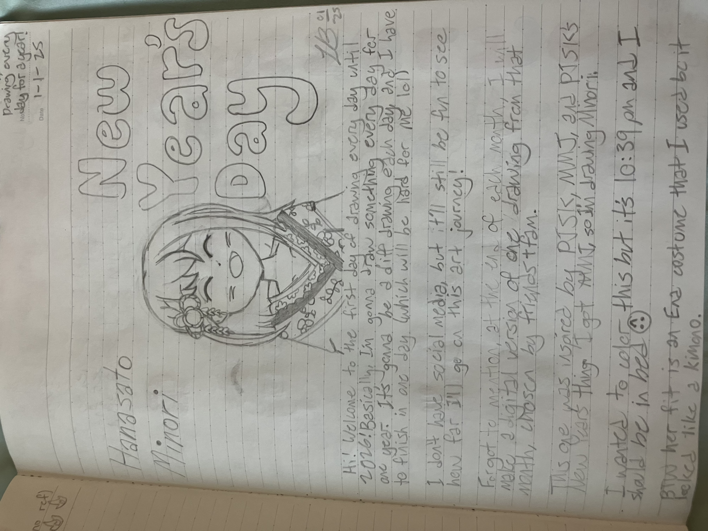
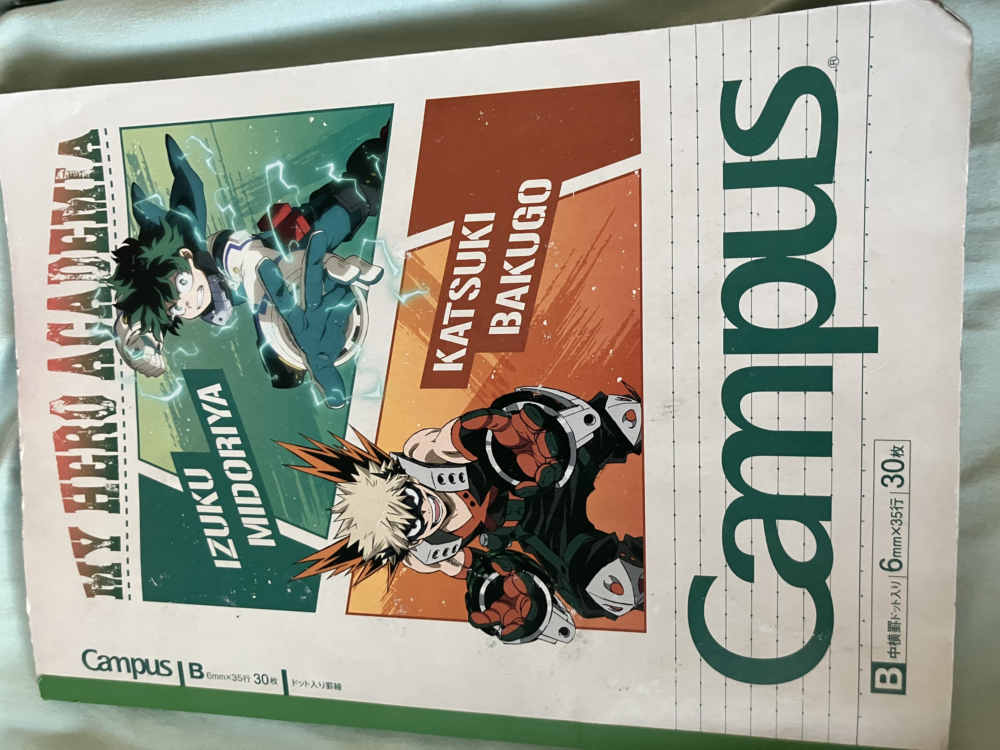

The first of my daily drawings! The rules I set for myself have since changed, but the concept has remained the same. (There's no way I'm ever doing this again tho)
Oh yeah, the inspiration for this came from the New Year's event in Project Sekai, where we could get a New Year's fortune based off of the groups in the game. The group I got was More More Jump, so I decided to draw Minori, also one of my favorite characters ^^ (sorry for the yap-fest lol i just didnt think i explained it well enough in the drawing) Um another thing about this is that I actually didn't think I would ever have a social media platform when I wrote this initially, but um now I have my own website!

The cover of my first sketchbook this year! This is a recent photo, so it looks kinda beat up haha